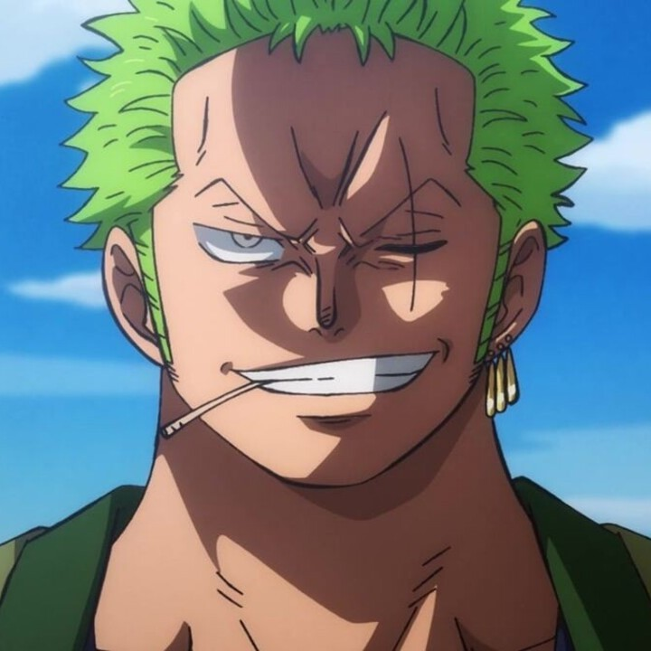
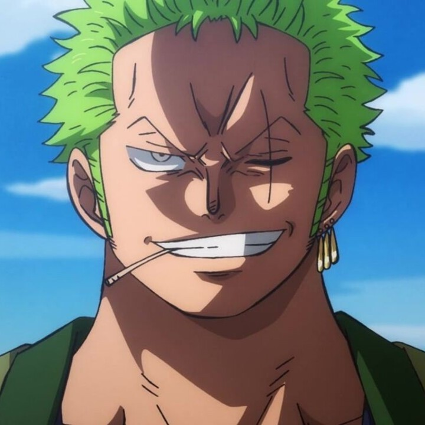

Il fut un temps où Gold Roger était le plus grand de tous les pirates, le "Roi des Pirates" était son surnom. A sa mort, son trésor d'une valeur inestimable connu sous le nom de 'One Piece' fut caché quelque part sur 'Grand Line'. De nombreux pirates sont partis à la recherche de ce trésor mais tous sont morts avant même de l'atteindre. Monkey D. Luffy rêve de retrouver ce trésor légendaire et de devenir le nouveau "Roi des Pirates". Après avoir mangé un fruit du démon, il possède un pouvoir lui permettant de réaliser son rêve. Il lui faut maintenant trouver un équipage pour partir à l'aventure !

 

Casslu
> C'est tarpin bien
legeekarnaud
> Plus grosse masterclass de l'histoire de l'animation japonaise.
Twix
> Pinacle de la fiction. L'oeuvre qui siège sur le trône de l'animation japonaise.
JeHaisOnePiece
> N'écoutez pas les 3 menteurs au-dessus.
youns13
> Oeuvre avec un univers hyper riche, l'histoire est excellente, et les personnages principaux intéressants à suivre.
Néanmoins, depuis l'ellipse le manque de tension décrédibilise l'aspect sérieux et épique de l'oeuvre.